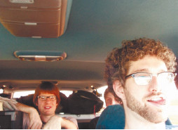

Водитель на заднем сиденье
Явление, получившее название «водитель на заднем сиденье», широко распространено повсюду. Практически каждый человек (не обязательно имеющий водительские права) уверен, что он прекрасно может справиться с управлением автомобилем. Более того, он знает, когда нужно тормозить, а когда ускоряться, когда требуется перестроение и в какой ряд, где необходимо поворачивать, а где проехать прямо. Он знает все и эти знания громогласно сообщает водителю за рулем. Уютно устроившись на заднем сиденье автомобиля (как вариант – на переднем пассажирском), этот самородок водительского мастерства командует всем процессом вождения (рис. 2.16).

Рис. 2.16. Советчик на заднем сиденье только мешает водителю
Примечание
Настоящие опытные водители обычно не позволяют подобных выходок, разве что ненавязчивый совет: «Здесь лучше бы перестроиться в правый ряд, потому что на следующем перекрестке с левого ряда на светофоре стрелка, а нам нужно ехать прямо». «Водитель на заднем сиденье» – это в подавляющем большинстве случаев дилетант, теоретик Но зато в теории он силен. Правда, тому, кто управляет машиной, от этого не легче.
Опытный водитель редко поддается провокациям «водителя на заднем сиденье». Ну а новички, привыкшие к командам инструктора по вождению, часто автоматически выполняют и команды такого теоретика от вождения. И, конечно же, попадают в неприятные ситуации. Хорошо еще, если по команде «водителя на заднем сиденье» вы просто въедете во двор, под знак «Движение механических транспортных средств запрещено» или под обычный «кирпич». Но вы можете повернуть в неустановленном месте, перепутать главную дорогу с второстепенной, перестроиться слишком резко или, напротив, слишком медленно и тем самым создать аварийную обстановку, а то и спровоцировать ДТП.
Совет
Некоторые опытные водители для борьбы с «водителями на заднем сиденье» пользуются простым приемом: как только уровень подаваемых советов начинает превышать допустимую норму, автомобиль останавливается и водитель приглашает советчика за руль: «Ты знаешь лучше, так садись и веди!» Особенно хорошо этот метод действует на сварливых тещ, а также на излишне нервных жен. Женщинам-водителям по отношению к мужчинам применять не рекомендуется: многие мужчины, даже ни разу не сидевшие за рулем, не выдержат подобного давления на психику и все же сядут на водительское место. Результат предсказуем, особенно если речь идет о человеке, который знает вождение только в теории.